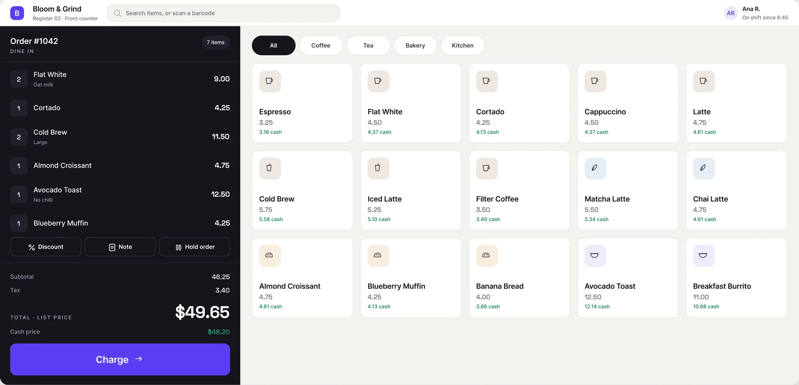
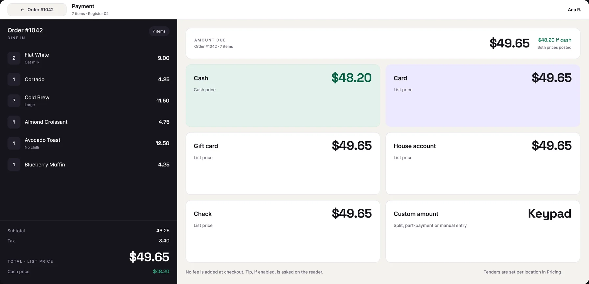
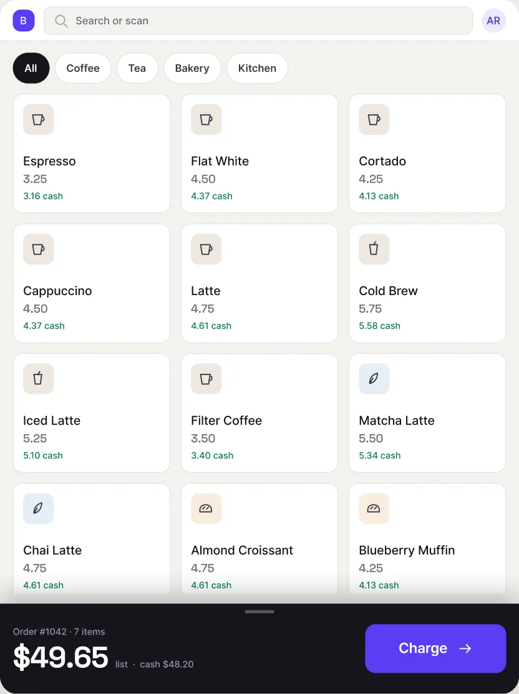
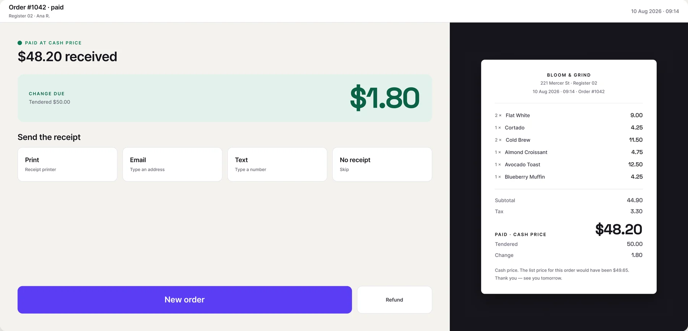
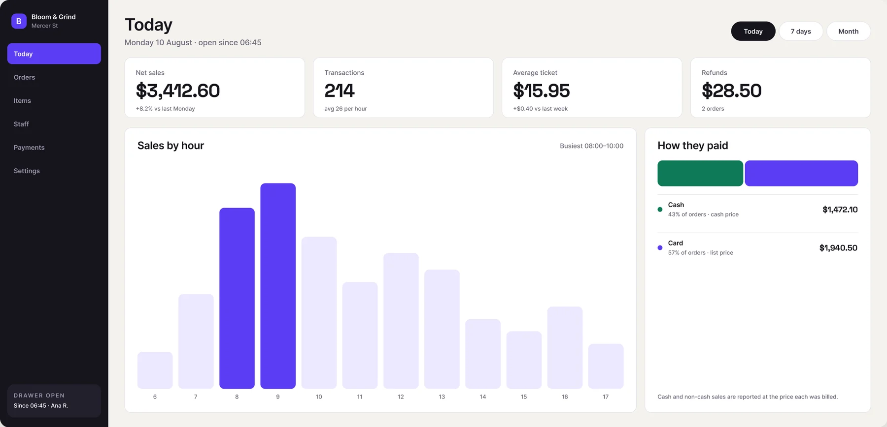
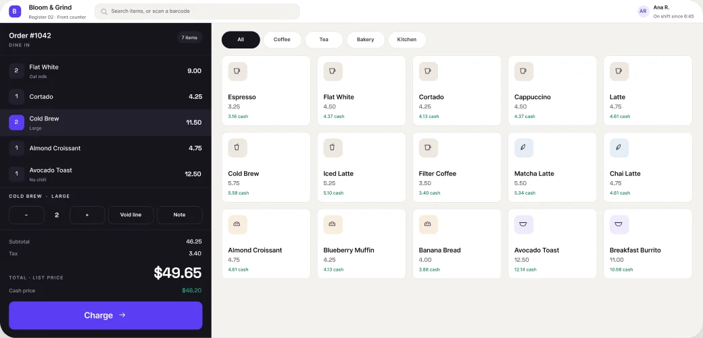
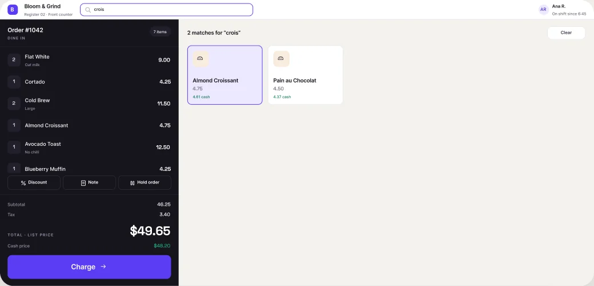
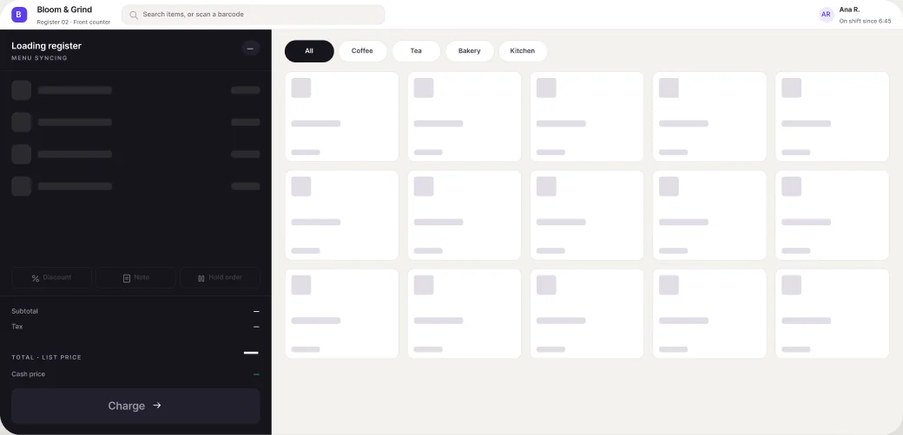
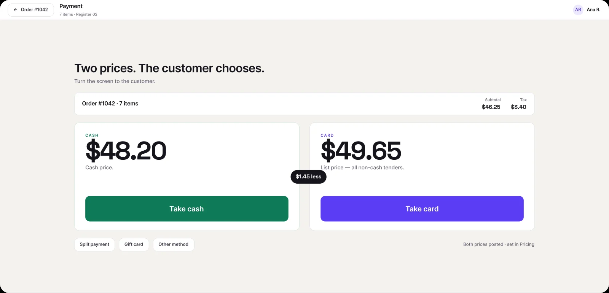

05 · Point of sale · Concept project
One order. Two posted prices.
Counter is a register concept for a café that posts a cash price and a list price. The payment screen turned out to be the easy part. The work was making every surface after the menu (the ticket, the receipt, the owner's report) say which price applied.

01 — The constraint
The price follows the tender.
Dual pricing posts a cash price and a list price upstream: on the menu, the shelf labels and the customer display. The terminal does not add a fee. It records which price applied.

Every tender carries the price that applies to it. Cash is lower; card, gift card, check and house account are all billed the list price.
Merchants enable different tenders. A grid absorbs that. Two hero cards do not: a house-account merchant would have nowhere to put it.
There is no fee line, because dual pricing has no fee. Tip, where enabled, is asked on the reader after the card is presented.
02 — What research changed
I designed a surcharge. The requirement was dual pricing.
Vendor documentation for dual pricing says both prices appear on shelf labels, receipts and the customer display, and that nothing is added at checkout. My first direction added a fee at checkout. Those are different programmes with different rules.
Dual pricing posts two prices. It does not add a line at checkout: that is a surcharge, which is separately restricted.
Gift card, check and house account are all billed the list price. A two-card layout cannot express them.
Shelf labels, menu and customer display carry the disclosure. The terminal only records which price applied.
Direction A stays in the file. The brief described a fee, and building it was how I found out the brief described a different programme. The rejected direction is the evidence.
03 — The arithmetic
Two prices only work if both reconcile to the cent.
A cashier and an accountant will both check these numbers, on different days. So the pricing model is written down once and every screen is held to it.
- 01 — The list price is the posted price
- Tiles, ticket and totals lead with it. The cash price sits beside it in green, never instead of it.
- 02 — Tax is charged on the list subtotal
- 46.25 + 3.40 tax = 49.65. One rate, one base, the same on every screen.
- 03 — The cash price is derived, not typed
- List ÷ 1.03, rounded to the cent: 49.65 becomes 48.20. No tile carries a hand-entered cash price.
- 04 — A receipt breaks down the price that was paid
- A cash receipt itemises the cash price; a card receipt itemises the list price. Neither mixes the two.
I found the first version of this wrong while writing the handoff spec: subtotal plus tax added up to the cash total while the ticket showed the list total. Fixing the model meant correcting the tax line on eleven screens.
04 — Two sizes
The tablet is not a narrower terminal.
On the wide terminal the ticket sits permanently beside the grid. At 810 wide in portrait it cannot, without gutting the grid.

A persistent bar carries the running total and both prices, so the cashier never leaves the grid to check the order.
The line items are hidden until the sheet is pulled up. Tabbing between cart and products would have been worse.
Every control a cashier touches clears 48px. Primary keys run 64, the charge action 88.
05 — Follow-through
The rule outlives the payment screen.
If the disclosure only lives where the customer chooses, it disappears the moment money changes hands.

The receipt states which price was charged and what the other one would have been. Same rule, different surface.
The merchant dashboard reports cash and non-cash sales separately, each at the price it was billed.
06 — The other user
A different person, so a different shell.
Cashier screens carry no navigation, because a cashier has one job. The owner gets a sidebar and a question the register never asks: how are people actually paying?

Cash and card are shown as separate totals, each at the price it was billed, so the split is never buried in one sales figure.
The register has no sidebar at all. Adding one would put six ways to leave the till in front of someone who should not leave it.
Reporting is shown, not solved: no date compare, no export, no till reconciliation.
07 — What a cashier actually does
A register is mostly not the happy path.
Orders get mis-tapped, menus load slowly, and people ask for something by half its name. These are the states that decide whether a terminal is usable at speed.



The component library had a voided-line state and no control that could reach it. Recovering from one wrong tap meant starting the order again, which is the first thing a real cashier would hit.
Retrieving a held order, the dine-in and takeaway switch, cashier lock, and sending food to the kitchen. Each is a surface of its own, and none of them turns on the pricing rule this case is about.
08 — The system, applied
Same screen, half the layers.
The screen on the right is built from the component library rather than drawn to match it. Nothing about it looks different, and that is the point.

This is one screen, migrated to show what finishing would cost. The rest still match the library by hand rather than by construction, and I would rather show that than imply otherwise.
In short
A pricing rule is only designed when every screen agrees about it.
The menu, the ticket, the payment screen, the receipt and the owner's report all tell the same story about one order: two prices were posted, and this is the one that applied.